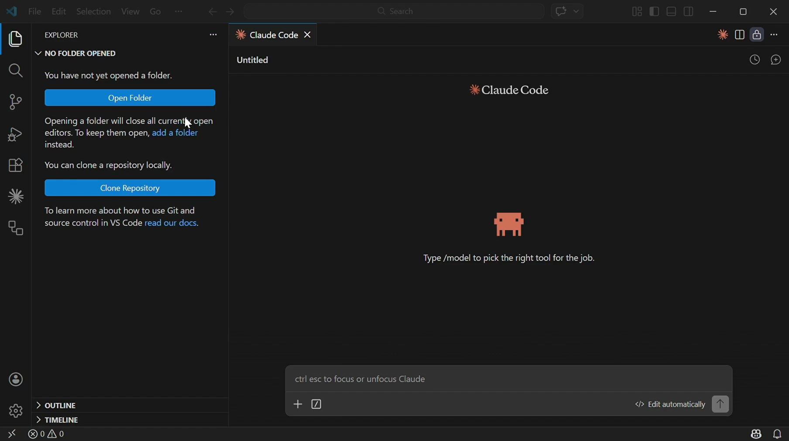
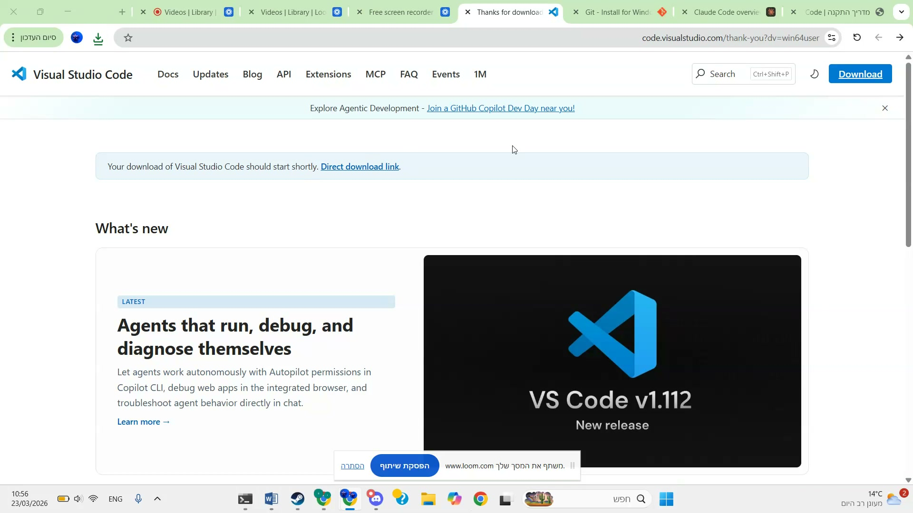
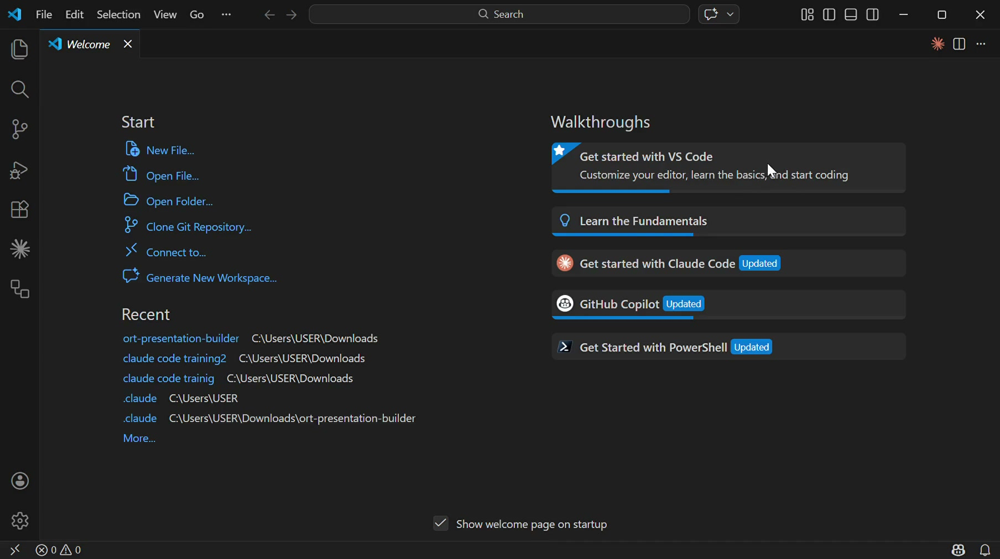
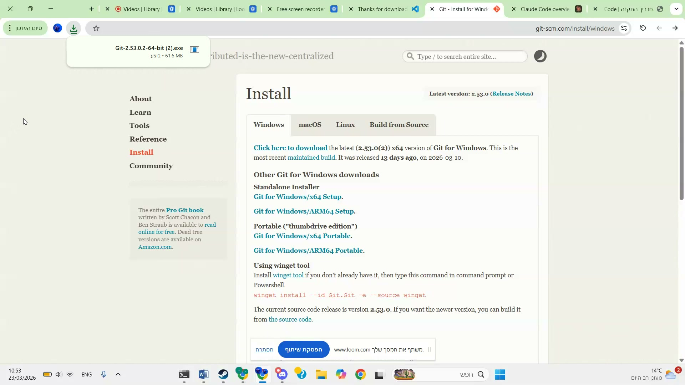
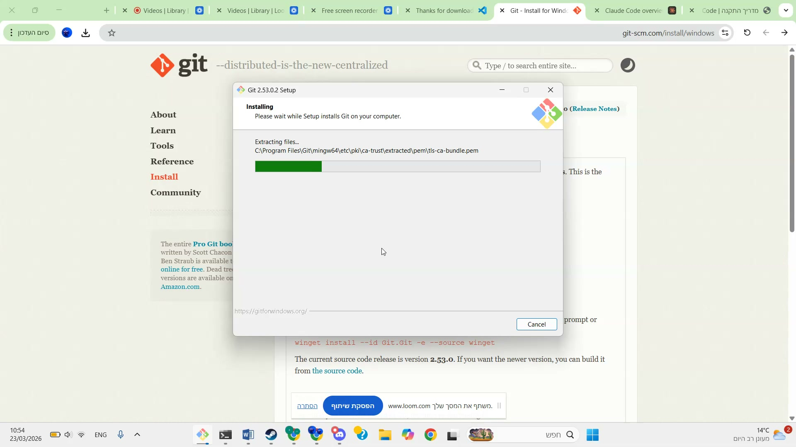
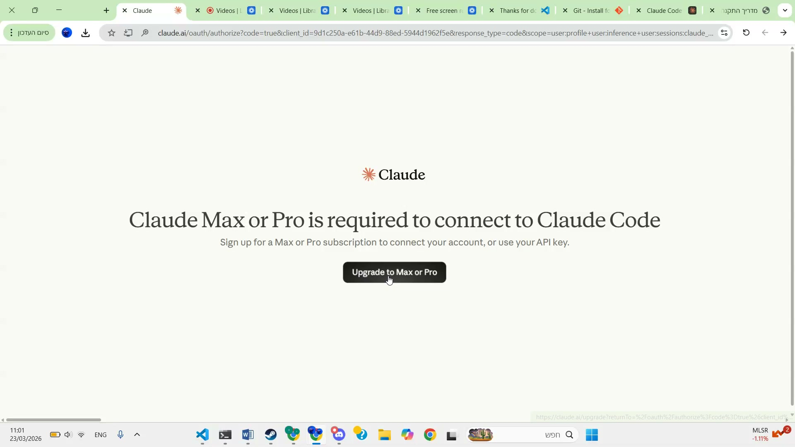
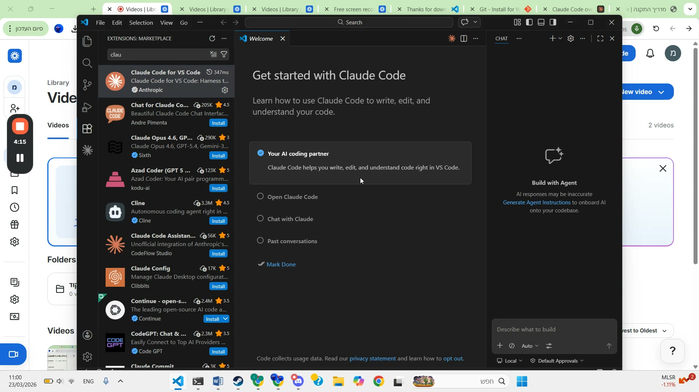
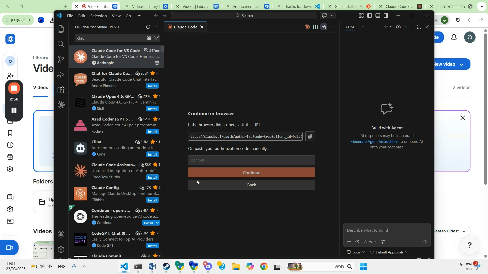
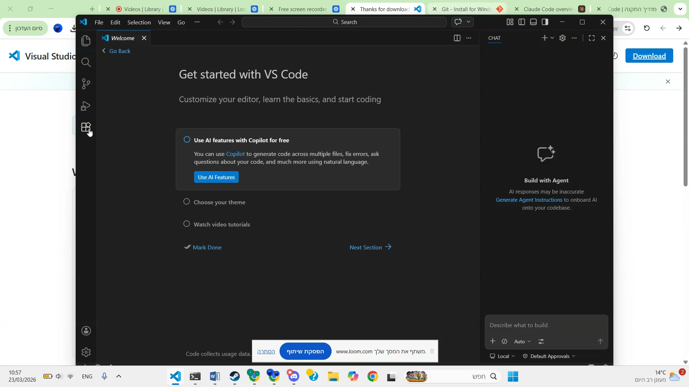

שיעור 0.1מה זה AI ולמה זה רלוונטי
בינה מלאכותית — בקצרה
בינה מלאכותית (AI) היא תוכנה שיודעת ללמוד ולעשות דברים שבדרך כלל רק בני אדם יודעים — כמו לכתוב, לתרגם, ליצור תמונות ולענות על שאלות.
אבל בשונה ממה שרואים בסרטים — AI זה לא רובוט שהולך ברחוב. זה כלי שחי בתוך המחשב או הטלפון שלנו, ועוזר לנו לעשות דברים מהר יותר ויותר טוב.
לא צריך להיות מומחה טכנולוגי
הרבה אנשים חושבים ש-AI זה רק למתכנתים או למהנדסים. זה לא נכון. היום, כל אחד יכול להשתמש ב-AI — אפילו בלי לדעת שום דבר על מחשבים.
אתם כבר משתמשים ב-AI בלי לדעת: כשגוגל משלים לכם משפט בחיפוש, כש-Waze מחשב לכם מסלול, או כשנטפליקס ממליצה לכם על סדרה.
דוגמאות מהחיים
- ChatGPT / Claude — שיחה חכמה שעוזרת לכתוב, לחשוב ולפתור בעיות
- Google Translate — תרגום מיידי בין שפות
- יצירת תמונות — מתארים במילים ומקבלים תמונה מוכנה
- כתיבת קוד — מבקשים אתר או משחק ומקבלים תוצר עובד
- סיכום מסמכים — מעלים מסמך ארוך ומקבלים סיכום בשלוש שורות
AI לא מחליף אותנו — הוא מגביר את היכולות שלנו. תחשבו על זה כמו מחשבון: הוא לא מחליף את היכולת שלנו לחשוב, אבל הוא עוזר לנו לעבוד מהר יותר.
חשבו על 3 דברים בעבודה שלכם שהייתם רוצים לייעל עם AI. לדוגמה: כתיבת מבחנים, הכנת מצגות, יצירת דפי עבודה. רשמו אותם — נחזור אליהם בהמשך הקורס.
שיעור 0.2מה זה Claude Code — סקירה
Claude Code — הכלי שמייצר תוצרים אמיתיים
Claude Code הוא כלי של חברת Anthropic שמאפשר לכם ליצור תוצרים דיגיטליים אמיתיים — רק על ידי תיאור מה אתם רוצים, בעברית פשוטה.
בניגוד ל-ChatGPT שבעיקר עונה על שאלות, Claude Code יודע ליצור דברים: אתרים, מצגות, משחקים, מסמכים ועוד.
לא צריך לדעת לתכנת
זה הקסם של Claude Code — אתם מדברים איתו בעברית, והוא כותב את הקוד בשבילכם. אתם לא צריכים להבין מה הוא כותב. אתם רק צריכים לדעת מה אתם רוצים.
תחשבו על זה ככה: אם הייתם שוכרים מעצב אתרים, הייתם מסבירים לו מה אתם רוצים. עם Claude Code עושים בדיוק את זה — רק שהתוצר מוכן תוך דקות, לא שבועות.
מה אפשר ליצור?
- מצגות לימודיות — עם עיצוב מרשים, אנימציות ואינטראקציה
- דפי נחיתה — אתר אישי או אתר לפרויקט
- משחקים חינוכיים — חידונים, משחקי זיכרון, טריוויה
- שאלונים ומבחנים — עם בדיקה אוטומטית
- אנימציות ותוכן ויזואלי — אנימציות HTML, אינפוגרפיקות, ותוכן אינטראקטיבי
- דוחות ומסמכים — מעוצבים ומוכנים להדפסה
- כלים מעשיים — מחשבונים, טפסים, דשבורדים וכלי ניהול
Claude הוא כלי חזק מאוד, אבל הוא לא מושלם. לפעמים הוא טועה בעובדות, ממציא מקורות שלא קיימים, או מייצר קוד שלא עובד מושלם בפעם הראשונה. תמיד בדקו את התוצר — פתחו בדפדפן, קראו את הטקסט, ובקשו תיקון אם צריך. כמו עם כל עוזר — בדיקה אנושית היא חובה.
Claude Code הוא כלי CLI (שורת פקודה) שרץ בטרמינל — אפשר להשתמש בו בטרמינל של VS Code או בטרמינל עצמאי. יש גם תוסף ל-VS Code שמשלב אותו בתוך העורך. לא צריך לפחד מהמילה "קוד" — זה פשוט הסביבה שבה Claude עובד. אתם תראו את התוצר בדפדפן.
אי אפשר לשבור שום דבר. שום דבר שתעשו עם Claude Code לא יכול לפגוע במחשב שלכם. הכי גרוע שיכול לקרות — הודעת שגיאה, ואז פשוט מנסים שוב. אפשר תמיד לבטל עם /undo או להתחיל מחדש עם /clear.
לא מזינים מידע רגיש. Claude הוא שירות ענן — אל תזינו סיסמאות, מספרי תעודת זהות, נתונים רפואיים או פרטי מטופלים. השתמשו בנתונים לדוגמה בזמן הלמידה. נרחיב על זה במודול 3.
איך זה עובד? בקצרה
- פותחים טרמינל (בתוך VS Code או בנפרד) ומריצים
claude - כותבים בעברית מה אתם רוצים ליצור
- Claude כותב את הקוד ויוצר את הקבצים
- פותחים את התוצר בדפדפן ורואים את התוצאה
- מבקשים שינויים ותיקונים עד שמרוצים

ככה נראה Claude Code כשפותחים אותו בפעם הראשונה ב-VS Code
היכנסו לאתר claude.ai/claude-code וצפו בדוגמאות של מה שאפשר ליצור. רשמו לכם רעיון אחד שהייתם רוצים לנסות.
שיעור 0.3התקנה צעד-צעד
מה צריך להתקין?
כדי להתחיל לעבוד עם Claude Code, צריך להתקין 4 דברים ולהירשם לשירות אחד. זה לוקח בערך 15-20 דקות. בואו נעשה את זה ביחד, צעד אחרי צעד.
שלב 1 — התקנת VS Code
VS Code הוא עורך טקסט חכם של מיקרוסופט. הוא חינמי לגמרי.
- היכנסו ל-code.visualstudio.com
- לחצו על הכפתור הכחול הגדול "Download"
- התקינו כמו כל תוכנה רגילה — Next, Next, Install
- פתחו את VS Code ובדקו שהוא עובד

נכנסים לאתר ולוחצים Download — ההתקנה מתחילה אוטומטית

ככה נראה VS Code כשפותחים אותו בפעם הראשונה — מסך Welcome
שלב 2 — התקנת Node.js
Node.js נדרש כדי להתקין את Claude Code. הוא מריץ כלים שכתובים ב-JavaScript.
- היכנסו ל-nodejs.org
- לחצו על הכפתור הירוק "LTS" (הגרסה היציבה)
- התקינו כמו כל תוכנה רגילה — Next, Next, Install
- לבדיקה: פתחו Terminal וכתבו
node --version
שלב 3 — התקנת Git
Git הוא כלי שעוזר לשמור גרסאות של הקבצים שלכם — כמו "שמירת משחק" למחשב. נשתמש בו גם כדי לפרסם את העבודות שלכם באינטרנט.
- היכנסו ל-git-scm.com/downloads
- בחרו את מערכת ההפעלה שלכם (Windows / Mac)
- התקינו עם כל ברירות המחדל — פשוט לחצו Next עד הסוף

אתר Git — לוחצים Install ובוחרים Windows

ההתקנה רצה אוטומטית — פשוט לחכות עד שנגמר
שלב 4 — הרשמה ל-Claude Pro
Claude Pro הוא המנוי שנותן גישה ל-Claude Code. העלות היא $20 לחודש (כ-73 שקל).
- היכנסו ל-claude.ai
- צרו חשבון עם מייל וסיסמה
- שדרגו ל-Claude Pro (לחצו על "Upgrade" בתפריט)
- הזינו פרטי כרטיס אשראי

כשמתחברים לראשונה — מופיע מסך שמבקש מנוי Claude Pro או Max
צריך כרטיס אשראי בינלאומי (Visa / Mastercard) כדי להירשם ל-Claude Pro. אם אין לכם, דברו עם הנהלת בית הספר.
שלב 5 — התקנת Claude Code (CLI)
Claude Code הוא כלי CLI (שורת פקודה) שמתקינים דרך npm. אחרי ההתקנה מריצים אותו בטרמינל:
- פתחו Terminal (בתוך VS Code: Ctrl+` או Terminal → New Terminal)
- הריצו את הפקודה:
npm install -g @anthropic-ai/claude-code - אחרי שההתקנה מסתיימת, הריצו:
claude - התחברו עם חשבון Claude Pro שלכם
אופציונלי: אפשר גם להתקין את התוסף של Claude Code ב-VS Code (חפשו "Claude Code" ב-Extensions) — זה נותן חוויה משולבת בתוך העורך.

חיפוש Claude Code בחנות התוספים — מתקינים את התוסף הרשמי של Anthropic

אחרי ההתקנה — מתחברים עם חשבון Claude Pro דרך הדפדפן

הכל מוכן! VS Code עם Claude Code מחובר — אפשר להתחיל ליצור
- "node is not recognized" / "npm is not recognized" — סגרו את VS Code ופתחו מחדש. אם זה לא עוזר, התקינו מחדש את Node.js ווידאו שסימנתם "Add to PATH" בהתקנה
- "permission denied" / "EACCES" — הריצו את הפקודה שוב עם הרשאות מנהל: קליק ימני על Terminal → "Run as Administrator"
- "claude: command not found" — סגרו את הטרמינל ופתחו חדש. אם עדיין לא עובד, הריצו שוב:
npm install -g @anthropic-ai/claude-code - ההתקנה תקועה / איטית — זה נורמלי, ההתקנה הראשונה יכולה לקחת 2-3 דקות. חכו בסבלנות
- שגיאה אחרת באנגלית? — פשוט העתיקו את הודעת השגיאה ל-Claude (ב-claude.ai) ובקשו עזרה. הוא ידע לפתור
אם נתקעתם ולא מצליחים לפתור — אל תוותרו! שלחו מייל ל-learni.contact@gmail.com עם צילום מסך של השגיאה, ונעזור לכם תוך יום עבודה.
מדריך התקנה מפורט
אם אתם צריכים הסבר יותר מפורט עם צילומי מסך, הנה מדריך מלא:
אם נתקעתם בשלב כלשהו — זה בסדר גמור. שלחו הודעה בקבוצת הוואטסאפ של הקורס ונעזור לכם.
התקינו את כל הכלים ובדקו שהכל עובד. רשימת בדיקה:
- VS Code נפתח בהצלחה
- Node.js מותקן (
node --versionבטרמינל) - Git מותקן (
git --versionבטרמינל) - חשבון Claude Pro פעיל
- Claude Code CLI מותקן (
claudeבטרמינל)
בדיקת ידע — מודול 0
1. מה צריך להתקין כדי להשתמש ב-Claude Code?
2. מה זה Claude Code?
3. כמה עולה מנוי Claude Pro?